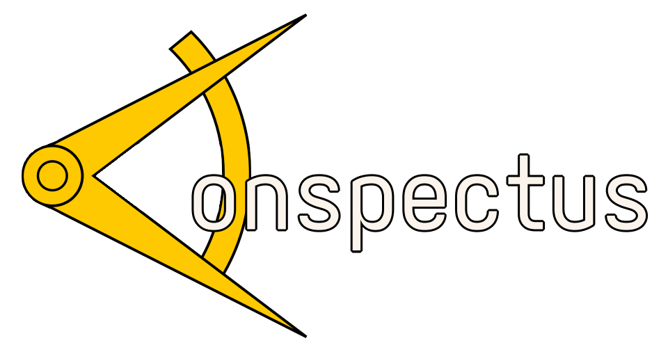

Conspectus is a free and open-source word processor controlled using vim motions. Documents are stored in plaintext and saved on your account for later access. You can export to PDF or download the unformatted plaintext file to your device.
About
Conspectus is a free and open-source project made by ←me! I wanted to try making a word processor since that's the only idea I could think of where an login system made sense outside of a petit bourgeois business website (which I hold a heavy distaste for). It uses an incomplete implementation of vim motions because I'm lazy.
Why vim motions?
Partly because it was easier to implement in my head (since it only concerns the keyboard) but also because I really like vim motions. It feels much nicer on your hands than constantly going back and forth from keyboard to mouse, especially with an ergonomic keyboard and a custom layout you find comfortable.
What is that logo?
It is the compass from the national emblem of East Germany turned 90 degrees counterclockwise then mirrored vertically. The font is Aporetic Sans colored #faf4ed (from the Rosé Pine color scheme) with a stroke width of 0.5. I whipped it up in Krita after getting the idea of using some symbol from East Germany (I really like their symbols).